Oshu
Oshu · Iwate
Oshu
Highlighted on the Iwate map.
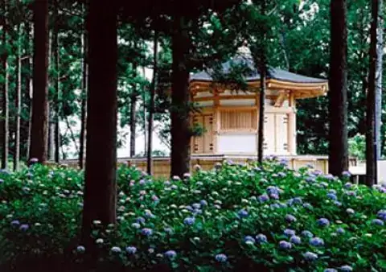
Stay
奥州・平泉温泉旅館ITSUMU
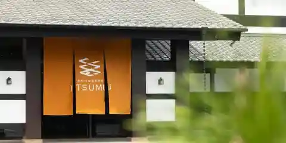
Oushuu Hiraizumi Onsenryokan Itsumu
Ryokan inn in Oshu, Iwate.
水沢翠明荘
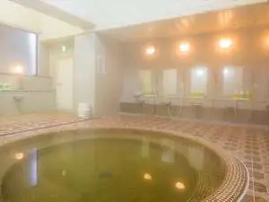
Mizusawa Sui Mei Sou
Lodge in Oshu, Iwate.
みずさわ北ホテル
Mizusawa Kita Hoteru
Hotel in Oshu, Iwate.
水沢グランドホテル
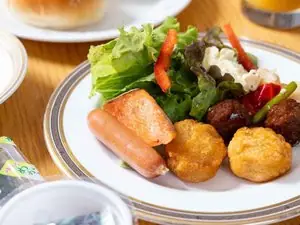
Mizusawa Gurandohoteru
Hotel in Oshu, Iwate.
青木旅館
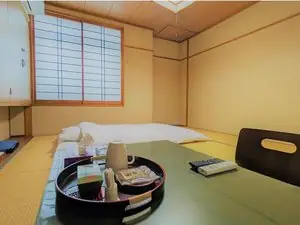
Aoki Ryokan
Ryokan inn in Oshu, Iwate.
水沢グリーンホテル
Mizusawa Guriinhoteru
Hotel in Oshu, Iwate.
珠玉の湯 薬師堂温泉
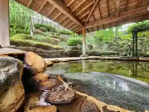
Shugyoku No Yu Yakushidou Onsen
Onsen lodging in Oshu, Iwate.
ホテルニュー江刺
Hoterunyuu Esashi
Hotel in Oshu, Iwate.
民宿姫乃屋
Minshuku Hime No Ya
Guesthouse (minshuku) in Oshu, Iwate.
Dining
日本料理 新茶家
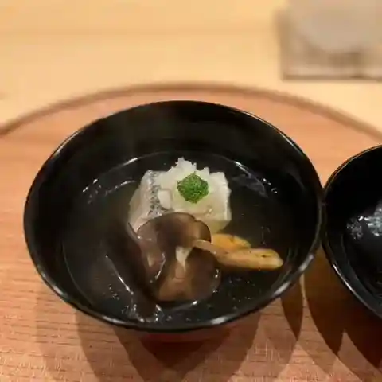
Nihonryouri Shincha Ie
Japanese restaurant in Oshu, Iwate.
龍園
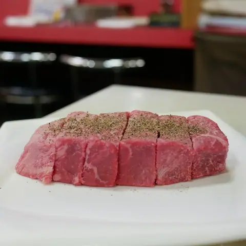
Ryuuen
Yakiniku (grilled meat) restaurant in Oshu, Iwate.
食道園
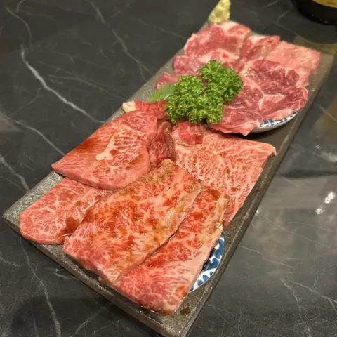
Shokudou Sono
Yakiniku (grilled meat) restaurant in Oshu, Iwate.
まるぶん
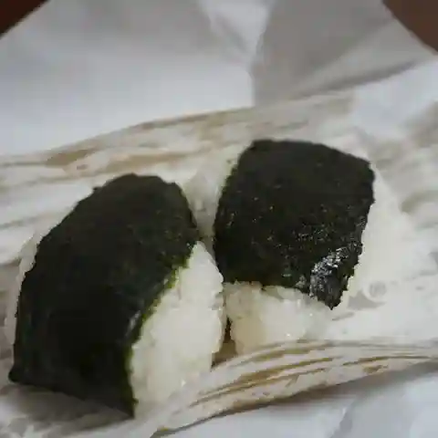
Marubun
Onigiri shop in Oshu, Iwate.
らいおん食堂
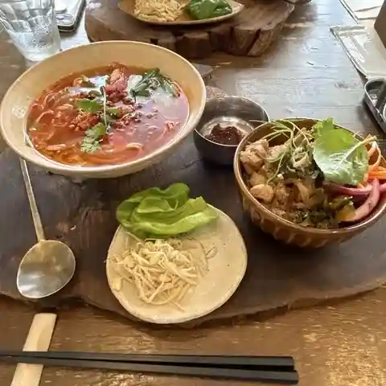
Raion Shokudou
Creative-cuisine restaurant in Oshu, Iwate.
エルミタージュ
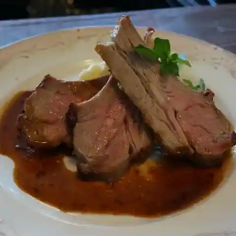
Erumitaaju
French restaurant in Oshu, Iwate.
牛匠おがた 駅東店
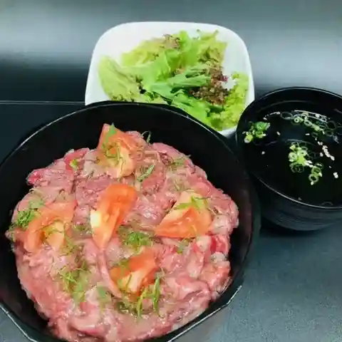
Ushi Takumi Ogata Eki Higashi Mise
Yakiniku (grilled meat) restaurant in Oshu, Iwate.
銀蝶
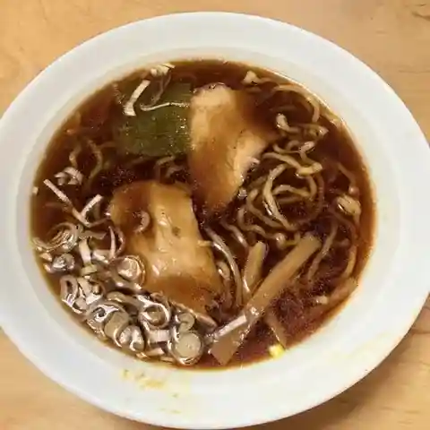
Gin Chou
Ramen shop in Oshu, Iwate.
会津喜多方ラーメン坂内 小法師 水沢店
Aizu Kitakata Raamen Sakauchi Koboshi Mizusawa Mise
Ramen shop in Oshu, Iwate.
SAMURAI 桃太郎
Samurai Momotarou
Ramen shop in Oshu, Iwate.
手打ち蕎麦わ
Teuchi Chi Soba Wa
Soba restaurant in Oshu, Iwate.
菊亭
Kikutei
Ramen shop in Oshu, Iwate.
おいしんぼ
Oishinbo
Tonkatsu restaurant in Oshu, Iwate.
和風れすとらん 牛の里
Wafuu Resutoran Ushi No Sato
Beef restaurant in Oshu, Iwate.
麺屋 琥珀
Men Ya Kohaku
Ramen shop in Oshu, Iwate.
瑳山
Sa Yama
Soba restaurant in Oshu, Iwate.
回進堂
Kai Susumu Dou
Japanese sweets shop in Oshu, Iwate.
そば処 もちた屋
Soba Tokoro Mochita Ya
Soba restaurant in Oshu, Iwate.
前沢サービスエリア 上り フードコート
Maesawa Saabisueria Nobori Fuudokooto
Shokudo diner in Oshu, Iwate.
助八寿司
Jo Hachi Sushi
Sushi restaurant in Oshu, Iwate.
前沢サービスエリア（上り線） レストラン
Maesawa Saabisueria ( Nobori Sen ) Resutoran
Shokudo diner in Oshu, Iwate.
岡山らぁめん 麺屋照清
Okayama Raamen Men Ya Shou Kiyoshi
Ramen shop in Oshu, Iwate.
前沢サービスエリア（下り線）スナックコーナー
Maesawa Saabisueria ( Kudari Sen ) Sunakkukoonaa
Shokudo diner in Oshu, Iwate.
キッチン アンドウ
Kitchin Andou
Omurice restaurant in Oshu, Iwate.
Sights
Mizusawa Racecourse
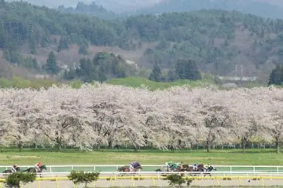
Mizusawa Racecourse has a somewhat retro atmosphere. The view of the mountains is spectacular, with Mt.
Iwate Esashi Beef
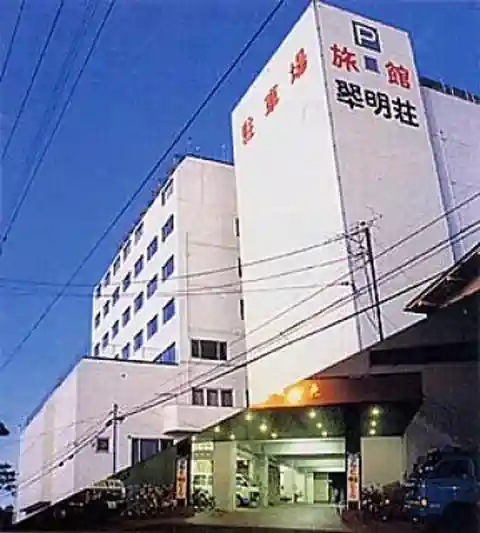
Esashi beef is raised with care, one by one, and fed with high-quality rice straw and hay produced in the fertile land of the Kitakami River basin.
Cafe Restaurant Basic
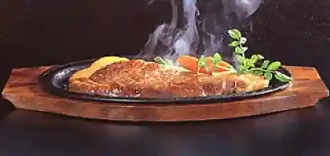
Please enjoy the carefully selected Maezawa beef steak, which is known for its tender meat and sweet taste, and the special Western-style and Japanese-style sauces to suit your taste.
Iwate Oshu Beef
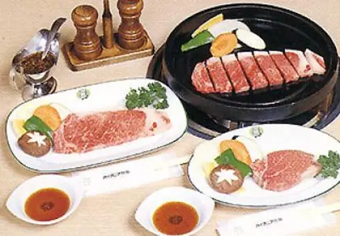
Iwate Oshu beef is a new brand of beef that was created in 2006 by unifying the brands of Mizusawa, Isawa, Kinugawa, and Kanegasaki beef.
Maezawa Beef “Nigiri” Kitcho Sushi
Nigiri sushi that takes advantage of the flavor of Maezawa beef, with its soft meat and slight sweetness.
Farmhouse restaurant Mada Kurusuta
The origin of "Isawa food," which offers menus that are particular about local agricultural and livestock products.
Oshu Senbei specialty store Senya
Received the highest gold award at the World Monde Selection for 5 consecutive years.
Sandaisugi (Local Sweet)
Chusonji Temple in Hiraizumi was registered as a World Heritage Site in 2011.
Mizusawa Tourism and Products Center Z Plaza ATERUI
Mizusawa Tourism and Products Center Z Plaza ATERUI
Esashi Apples
The taste and quality of Esashi apples is the best in Japan.
Maesawa Beef
If you would like to take Maezawa beef, which has the best meat quality in Japan, home and enjoy it, please come to this restaurant.
Tororo Udon
Tororodon is a specialty noodle made with carefully selected ingredients and added tororo sweet potato.
Ofukuro Restaurant
"Hatt" is a local dish from the Tohoku region that is also called suiton, tsusuri, or hitstsumi depending on the region.
Esashi Kinfuda rice
Esashi Kinfuda rice has been selected as one of the top 100 Japanese rice varieties, and received the highest rating of "Special A" in the taste ranking by the Japan Grain Inspection Association.
Gyusho Ogata Station East Branch
A restaurant directly managed by Ogata Farm. Our meat selection includes carefully selected Maesawa Beef, including Ogata Farm Beef produced by Ogata Farm, which has won many awards every year.
Maesawa Beef Cuisine Ajishin
This is a restaurant where you can casually enjoy carefully selected Maezawa beef, mainly Maesawa beef produced by Ogata Farm.
Gyu-chan Pie Eishindo
"Gyu-chan Pie" is named after "Gyu-chan Street" in Ushi-no-machi.
Isawa Farm-Direct Center Ajisai
Isawa Farm Direct Center Hydrangea focuses on seasonal agricultural products as well as processed products such as handmade tofu and daifuku.
Iwayado Yokan Kikusendo
"Iwayado Yokan" is a traditional flavor that has been preserved since its founding in 1908.
Rest place Esashi Fujiwara no Sato
The restaurant and store are located on the first floor, and a large hall for groups is located on the second floor.
Japanese Restaurant Ushi no Sato
Customers from all over the country can fully enjoy authentic Maezawa Beef.
Tateyama Historical Park (Iwayado Castle Honmaru Ruins)
This is the site of the castle of a powerful family that ruled this area from ancient times.
Shoboji Temple
The temple, commonly known as "Oku no Shoboji," was founded in 1348 by Zen master Museki Ryosho.